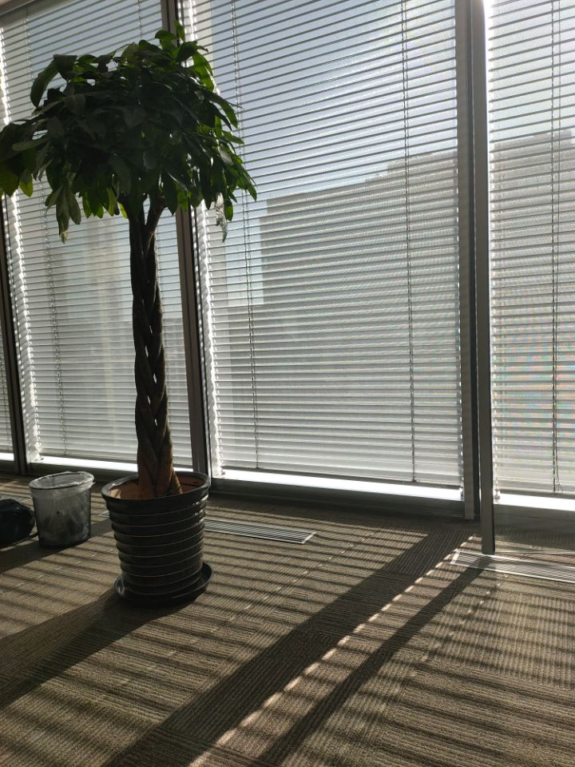

来MSRA的七个月，我都做了些什么？
3月5日的晚上，我投出了来MSRA后的第一篇、也是我人生的第一篇paper。从2019年7月23日开始实习，到2020年3月5日完成第一份工作，七个多月时间也就这样悄悄地过去了，可当我试图回想这半年多都做了什么时，记忆却仿佛被切成了很多片，这篇随笔便是想趁着暂时不那么忙，好好地将这些碎片串起来，好好地总结一下来北京后这七个月以来的经历。
早在2018年的暑假，因为信息学院英才班组织的见习活动，我就有幸进入了MSRA参观。当时是在老师的带领下，参观了13层实习生的工位区域，听了联培博士的招生宣讲，那个时候就感慨微软这边的环境确实不错，也萌生了申请这边联培博士项目的想法。到了次年3月开始正式报名的时候，也没想太多就先申请了。因为我本身是打算国内保研的，然后心想着要是这个项目能选上，也就不用那么麻烦去申请各种保研的夏令营了（关于保研的过程我可能有空再另外详细写一写🚩）。去年申请的人数似乎比往年少一些，不过从参加面试的名单来看也有七八十人。4月面试完后就是等结果，最后的结果我记得似乎比预计时间晚了一个多星期，那一个多星期的等待确实也有些煎熬，当时把大部分希望都寄托在了这边，保研那边反而没有特别关注。但可能还是自己各方面实力以及面试时表现不够优秀吧，联培博士项目没选上😐，但还是有幸获得了大四来这边实习的资格。

按照安排我本来应该是去年的7月16日入职，但由于当时我申请的一个夏令营时间冲突，便顺延了一个星期。当时是申请了两个北京的夏令营，一个清华计算机系，一个自动化所，所以我实际上7月9日就已经到了北京（在北京住一个多星期的宾馆简直太烧钱了💰）。23号完成入职手续后，就由Josie小姐姐领着去见了我的mentor曾老师。寒暄几句后，老师便问我对姿态估计有没有兴趣，其实我真的到那个时候对这些研究方向的具体内容都没什么概念，也就答应了下来。接着又见了后来直接指导我、与我联系更为紧密的另一位mentor春雨老师，然后回到工位上又开始研究新入职的各种事项，后来春雨老师又发来了几篇paper让我先看看。我当时对于所谓的科研真的是约等于完完全全还在门外，paper没看过几篇，python、pytorch等也都不熟悉，之前在学校也缺少相关项目经验，感觉要学的东西实在是太多了（直到现在我依然觉得要学的东西实在太多了📖），不过好在mentor给了我足够的时间去自我学习，我也非常感谢。
我有时候真的感觉人的性格到了新环境也依然很难改变，我到一个新环境前，常常会对自己说要更外向、更开朗一点，主动去多跟人交流，多认识一些朋友，可是到了新环境，还是一样的不够主动，甚至总觉得自己有轻微的社恐😨。第一次去参加paper reading的时候，我到门口却发现里面已经坐满了人，而且似乎已经开始了，顿时不太想进去了，又默默地回到了自己的工位。可能还是对陌生的环境、陌生的人会内心有一点点莫名的畏缩吧，后来慢慢熟悉起来后就好了一些。
除了paper，mentor也让我先去看一下之前的代码并跑通代码👨💻，在这个过程中，张哲师兄也给了我很大的帮助。那个时候我对 linux的常见指令 、pytorch的语法、cuda的常见报错、以及训练一个模型的整个流程等方面的知识都很欠缺，再加上对相关理论和代码不熟悉，报了错自己也看不太懂，也不太善于去搜索，都是通过询问师兄来得到解答。之后的一两周都在死磕那份代码，最后还是通过的DEBUG的单步调试功能，逐行执行，才慢慢地理清楚整个程序的运行流程。
大概8月中旬，我正式开始了具体的工作，最开始是在提供的代码上进行一定的修改，采用新的方法来实现。因为我们对最终目标是做多人姿态估计，先用了大概一个星期在单人上尝试，初步成功后开始尝试在多人的数据集上做实验，这时大概是8月21日，离我入职差不多一个月，也就是说我入职后的第一个月，基本是处于准备阶段的学习过程。9月9日我在第一次在组会上讲了我们的想法，以及展示了初步的结果。9月11日我开始研究我们后续实验中主要将使用到的一个数据集，9月26日我把在新数据集上的初步结果整理好，在小组内和大家一起讨论。这是第二个月。

之后是愉快的十一假期，因为学校有点别的事，我实际9月27日就提前请假溜了。十一回来后又是接着工作，10月17日我整理好了之前的代码，然后花了一定的时间研究之前出错的情况（💁♂️突然的小总结：知道错的地方为什么错这一点感觉非常重要，不然凭感觉很容易白白浪费时间）。我们做的是多视角下的多人姿态估计，通过初步分析结果，发现视角的选取对实验结果有很大的影响。10月21日我第二次在组会上分享了最新的进度。第三个月大概是因为放了个小长假，所以感觉没做什么就过去了。
然后就是根据之前的分析对实验设置进行修改，选取了不同的视角📷，并在3D部分取消了2D部分的数据增强，减少训练难度，成功地将结果提升了不少。11月8日，mentor提出可以尝试在另外两个数据集上再做实验，同时也是第一次提到了论文相关的事情，“你可以先做做这两个数据集， 然后咱们就准备写ECCV”。11月18日我第三次在组会上分享第一个数据集上改进后的结果。到第四个月，第一个数据集上实验基本完成，开始尝试新的数据集。但其实在这之前所做的实验，都没有按照一个特定的目的，还都是处于尝试性质，实验结果也没有好好地整理，所以这个数据集上最后还是得全部重新跑实验。接下来的这个月大概就是在这两个新数据集上做实验，用新数据集总是要前期花一定的时间去研究、去探索的。12月23日的组会上我也讲了讲这两个数据集上的结果，第五个月大概就是花在新数据集上了。
元旦假期回来后，mentor找我的次数明显频繁了一些，可能也是要正式开始着手论文的写作了📝。一月份我的工作主要是帮论文绘制一些图表，同时也开始进行更系统的实验。按照论文的思路，去单独研究每个部分对实验结果的影响。过年前的这段时间主要就是研究proposal部分的网络，听从mentor的建议修改了一些实验设置，发现对结果也有较明显的提升。当时也遇到了一个比较奇怪的问题，就是按道理不应该出现的问题，也花了比较多的时间去研究怎么解决（结果后来发现是代码中训练数据生成部分出现了根本性的错误💣）。然后就到过年啦，放假前临时学了学怎么用shell脚本后台跑程序，学会了后发现真好用。我是1月20日那天离开北京，走之前我还讲了年前的最后一次paper reading。我记的很清楚那天早上新闻爆出来北京有两例新冠肺炎确诊病例，那时候只有武汉、广东和北京出现了，当时还半开玩笑的跟同学说还好离开了北京，谁想到最后发展到了那么严重的地步😷。第六个月过去了。
北京是暂时回不去了，1月29日申请了公司的VPN后开始远程办公💻。距离论文截稿DDL还有一个多月，但因为之前也做了挺多实验，所以感觉上时间上也不是那么紧迫。实验的重心放在了提升与其他工作可比的数据集的实验结果上，也花了大概一个星期去研究另一篇工作的代码，尝试去跑通（这里又很想吐槽tensorflow的各种环境不兼容问题，太难受了，最后还是放弃，我怕我把服务器环境给搞坏了🙄）。2月24日我在组会上整体的讲了一下我们的工作。但是令人非常伤心的是，我下午刚刚讲完实验结果，晚上就意外地发现评估代码里有问题，这个小问题会导致之前的实验结果偏高😭。距离DDL还有一个多星期发现重要的结果突然变差，讲道理心态真的有点点崩。没办法只能重新修改实验设置，重新进行实验，还好那两个数据集比较小，训练起来也快一些。那三四天整个人都突然紧张忙碌了起来，睡前也总是想着实验相关的事情。好在新的结果虽然比不上原来错的结果，但也不至于太差，最后又采取了一些其他的评估指标来体现我们方法的优势，不知道这里最后会不会不够strong😶。最后四五天，听从mentor的建议，又补充了一个实验，让我们的方法看起来更有效，最后也在DDL前提交上去了最后的paper。
总的来说我的工作主要还是集中在做实验上，而paper的内容则主要是我的mentor来撰写，我看着mentor写出的文字，内心常常感慨道，要是让我写，我是不可能写出这样的文字来的，光是那三四十个引用的工作，我就大部分都没有看过；还有一些地方的表述也让我觉得，我来写的话，可能心里知道大概的意思，却很难用准确的语言去描述出来。写出一篇好的文章，应该还是得建立在广泛阅读他人工作的基础上吧，我可能还需要非常非常大量的积累。这第七个月就在家里远程办公中度过了，说实话，我也开始慢慢习惯这种生活，感觉在家也挺好的（肥宅本质🏠hhh），但还是希望疫情能尽快过去，尽快恢复正常的生活。
在MSRA，除了完成自己负责的主要工作外，还有一些其他的事情。学校那边还一门非常硬核的《机器学习》，12月还花了不少时间复习准备考试。再就是本身我这个项目还有三门课要上，两门讲座性质的课（前沿研究进展&科技英语），再加上一门高级软件工程，也占用了不少时间。至于周末等其余时间在北京的吃喝玩乐，可能有空再另外总结一下吧🚩。
总之，这是一篇非常流水账式的自我回顾，最后还是要感谢MSRA提供的环境，也感谢mentor与其他伙伴的帮助，让我在这个过程中渐渐成长了很多🙏。在接下来的实习生活中，还要继续努力工作！（标准式结尾😁）